Creative Flows
Yoga is art. Connecting poses, exploring shapes and finding new ways to move.
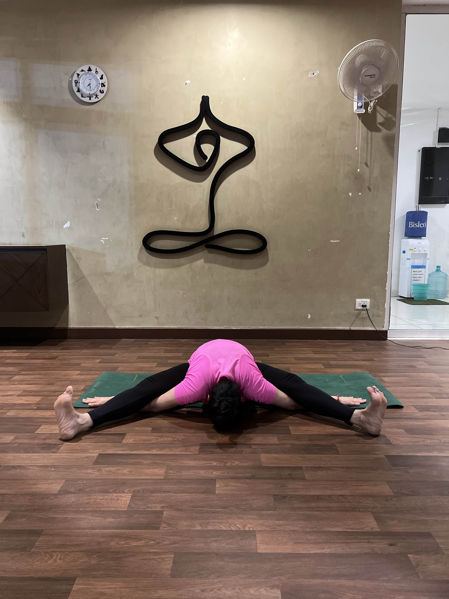
Yoga is my pause in a busy world. It keeps me grounded, grateful and going.
I'm Apurva Gupta — an engineering leader in fintech, a mother, a Kathak learner and a yoga practitioner based in Bengaluru.
Busy But Balanced is my space to document real, consistent practice: creative flows, backbends, strength, mobility and quiet progress.
“Progress built quietly.”
Yoga is art. Connecting poses, exploring shapes and finding new ways to move.
Patience, mobility and strength built through consistent, mindful practice.
Core work, arm balances and staying steady when the body wants to wobble.
A full-time career. Family. Life. And still making space to return to the mat.
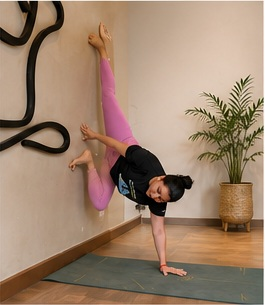
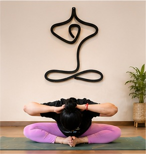
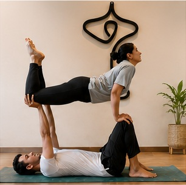
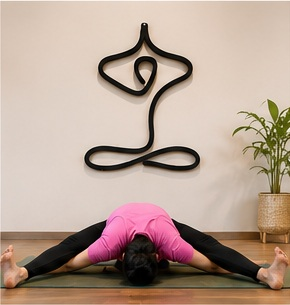
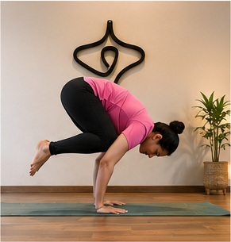
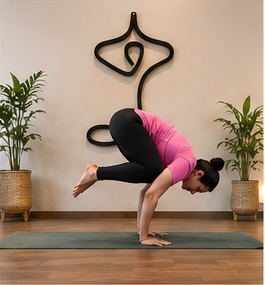
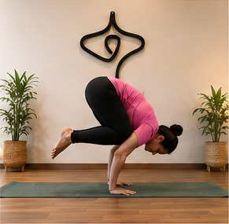
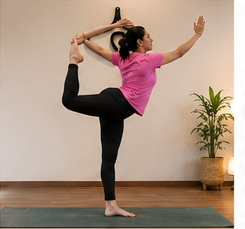
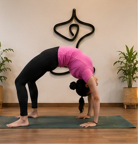
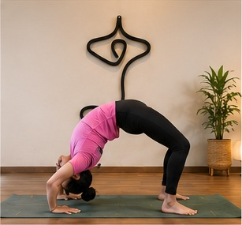